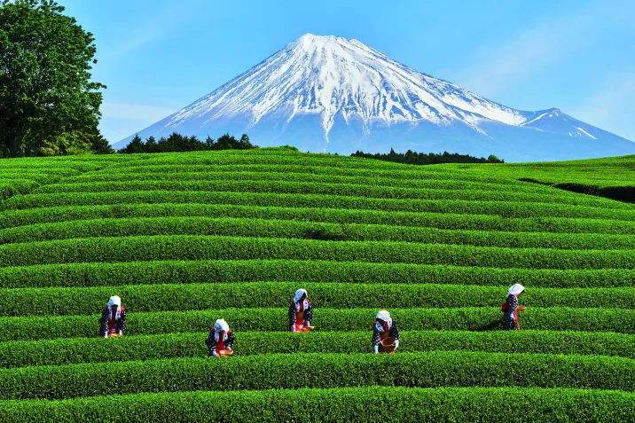
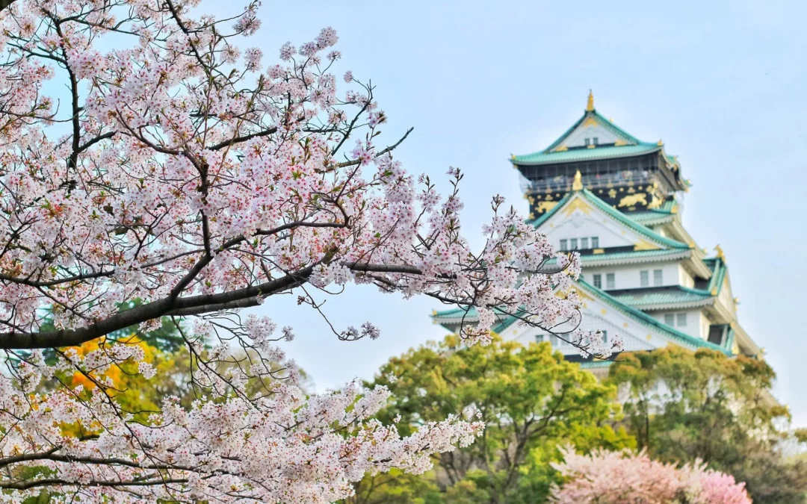
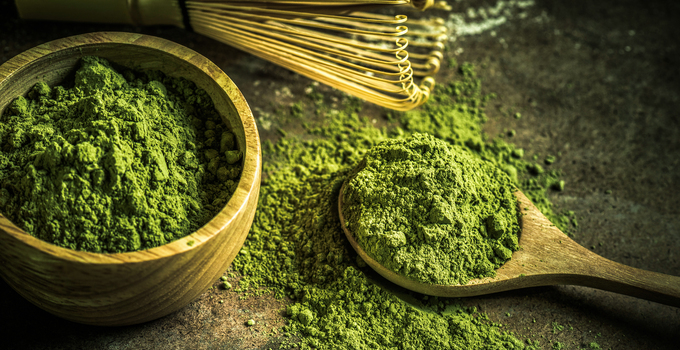
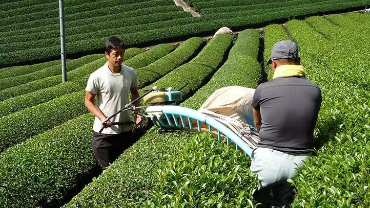
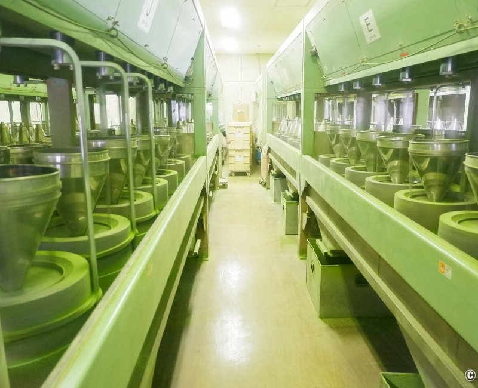
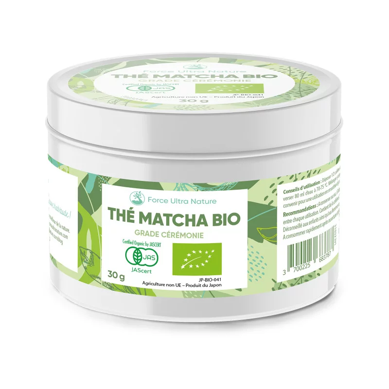
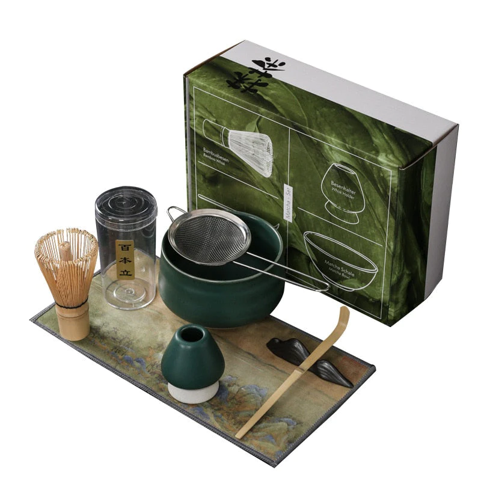

Découvrez l'essence même du thé avec Matcha Tea. Laissez-nous vous emmener dans un voyage sensoriel où chaque tasse raconte une histoire et chaque gorgée éveille votre esprit. Bienvenue dans notre monde de thé, bienvenue chez Matcha Tea.
Bienvenue chez Matcha Tea, là où l'aventure du thé prend vie.
Animés par cette passion naissante, nous avons entrepris un voyage de découverte à travers les plantations de thé du Japon, nous imprégnant de la culture et de la tradition qui entourent cette précieuse feuille. C'est là que l'idée de Matcha Tea est née - une entreprise dédiée à partager la magie du matcha avec le monde.


Laissez-nous vous emmener dans un voyage, un voyage où les saveurs se mêlent à l'histoire pour créer une expérience inoubliable. Tout a commencé avec une passion, une passion pour l'art ancien du thé et un profond respect pour ses racines asiatiques.
Il y a des années, alors que nous nous imprégnions de la culture japonaise, nous avons découvert le matcha. Ce thé vert en poudre, utilisé traditionnellement dans la cérémonie du thé japonaise, a captivé tous nos sens. Son goût délicat et sa texture veloutée ont instantanément conquis nos palais, mais c'est son histoire riche et ses bienfaits pour la santé qui ont vraiment éveillé notre intérêt.


Mais notre engagement va au-delà de la qualité de nos produits. Nous croyons en la durabilité et en la responsabilité sociale, travaillant en étroite collaboration avec nos partenaires pour promouvoir des pratiques agricoles respectueuses de l'environnement et soutenir les communautés locales.
Aujourd'hui, Matcha Tea est bien plus qu'une entreprise - c'est une communauté de passionnés de thé déterminés à partager leur amour pour cette boisson précieuse. Que vous soyez un connaisseur de thé expérimenté ou un novice curieux, nous vous invitons à vous joindre à nous dans cette aventure gustative.
À Propos de Matcha Tea
Notre Engagement
Matcha Tea ne fait aucune concession sur la qualité et l’origine de son thé matcha. Chaque étape de production est exclusivement réalisée au Japon : le matcha, les arômes et le conditionnement. Chaque production est testée qui garantit une absence totale de présence de pesticides dans nos produits.
Pourquoi choisir le thé matcha ?
De façon non exhaustive, voici quelques-unes des propriétés du thé matcha :
- Grâce à la théanine qu’il contient, il apporte une énergie douce et constitue une bonne alternative au café.
- Il est antistress et relaxant. Ce n’est d’ailleurs pas pour rien que les moines bouddhistes zen consomment du thé matcha depuis des siècles pour leurs méditations !
- Il aide à la régulation de la glycémie et du microbiote intestinal.
- Il améliore le système immunitaire grâce notamment aux antioxydants et vitamines qu’il contient.
- Il accroît les performances sportives et aide l’organisme à récupérer après l’effort. Ceci est principalement dû à la haute teneur en antioxydants qui favorisent l’oxygénation des muscles. Il permet également de réguler la production d’acide lactique, responsable des crampes musculaires.
Nos Services
1 - Vente de matcha :
Matcha Tea offre un service de vente de matcha de qualité nature ou parfumé. Que ce soit une occasion pour déguster seul ou en groupe notre thé matcha, notre équipe vous offre le meilleur du thé matcha venu directement d’une petite entreprise au Japon.
2 - Vente d’accessoires matcha :
Notre équipe vous offre des accessoires de qualité pour perfectionner votre thé matcha et en faire comme des professionnels.
Nos Valeurs
Qualité
Nous nous engageons à fournir à nos clients les meilleurs produits de thé matcha, en sélectionnant soigneusement des feuilles de thé de la plus haute qualité, cultivées de manière responsable et récoltées à la perfection.
Authenticité
Nous préservons l'authenticité et l'héritage de la tradition japonaise du thé matcha. Chaque aspect de notre processus de production et de notre service reflète notre engagement envers l'authenticité et le respect des pratiques traditionnelles.
Durabilité
Nous sommes déterminés à promouvoir des pratiques durables dans toute notre chaîne d'approvisionnement, depuis la culture des feuilles de thé jusqu'à la livraison de nos produits. Nous nous efforçons de réduire notre empreinte écologique et de soutenir les communautés locales et l'environnement.
Bien-être
Nous croyons au pouvoir du thé matcha pour améliorer le bien-être physique et mental. En offrant des produits de qualité et en partageant des connaissances sur les bienfaits du matcha, nous visons à enrichir la vie de nos clients en leur offrant une expérience de thé qui nourrit le corps et l'esprit.
Communauté
Nous sommes une communauté de passionnés de thé dévoués à partager notre amour pour le matcha. Nous encourageons la connexion et l'échange entre nos clients, créant ainsi un espace où les amateurs de thé peuvent se réunir, partager des expériences et découvrir de nouvelles façons de savourer cette boisson précieuse.
Ces valeurs représentent l'essence même de la marque Matcha Tea et guident notre mission à chaque étape de notre parcours.